08-05-2013 (Datakey) IronCAD Design Collaboration Suite, Next Generation devrimsel tasarým anlayýþýyla, 3B modelleme ve 2B teknik resim alanlarýný yeniden þekillendiriyor:
Amerikan IronCAD LLC firmasýnýn tasarým çözümleri programý olan IRONCAD, içerdiði modüllerle 3B ve 2B tasarým olanaklarýný tek bir yazýlýmda birleþtirmiþtir... |
|
18-09-2012 (Akro Mühendislik) Plastik parça üretim giderlerinin "Autodesk Simulation Moldflow" yardýmýyla düþürülmesi:
Plastik enjeksiyon ile üretilen parçalarýn maliyetleri gerek parça, gerek kalýp tasarýmýnda alýnan kararlar ile þekillenmektedir. Yapýlan araþtýrmalar, tasarýmýn ilk evrelerinde verilen mühendislik kararlarýnýn parça maliyetini 70%-80% arasýnda etkilediðini göstermektedir... |
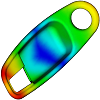 |
17-08-2012 (Dassault Systèmes) Yeni SolidWorks Electrical uygulamalarý duyuruldu:
2B þemalarýn ve 3B modellerin gerçek zamanlý entegrasyonu makine ve elektrik mühendisliði ekiplerinin daha iyi iþbirliði yapmasýna ve daha doðru tasarýmlar üretmesine olanak saðlýyor... |
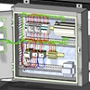 |
02-08-2011 (SimuTek) Stampack ile metal þekillendirme simülasyonlarý:
Stampack, farklý metal þekillendirme iþlemleri için genel amaçlý bir metal þekillendirme yazýlýmýdýr ve otomotivden, havacýlýða, metal paketlemeden, elektronik araç gereç üretim sektörüne kadar daha baþka bir çok sektörde kullanýlmaktadýr... |
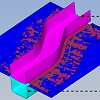 |
08-11-2010 (AVROTAS) Kompakt kaynak makinesi endüstriyel tasarýmý:
Coþkunöz A.Þ'nin Euroblech 2010 fuarýnda tanýtacaðý yeni Kompakt Kaynak Makinesi için bir endüstriyel ürün tasarým projesini baþarýyla gerçekleþtirdik; Proje, müþteri ve tasarlanan giydirme parçalarýnýn imalatýný yapacak tedarikçi firma ile sürekli baðlantýda ve koordineli çalýþýlarak, tüm tasarým ve imalat çalýþmalarýyla sadece 6 hafta gibi kýsa bir sürede tamamlandý... |
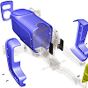 |
26-03-2010 (Epson Türkiye) CAD kullanýcýlarýna yönelik, Epson Stylus Pro 7700 ve 9700 yazýcýlarý ile çýktýlar, en az mürekkep harcamasýyla yüksek çözünürlükte alýnýyor:
Epson ProGrafik Kanal Müdürü Çaðdaþ Sevgen, yeni yazýcýlarýnýn en büyük özelliðinin CAD ve GIS kullanýcýlarýna, az mürekkeple yüksek çözünürlükte çýktý alma imkanýna sahip olmasýný gösteriyor. Sevgen, bu yeni ürünlere iliþkin sorularý þöyle yanýtladý... |
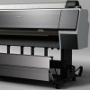 |
15-01-2010 (3Dconnexion) 3Dconnexion 3D fareleri, 3 boyutlu CAD uygulamalarýnda daha sezgisel ve doðal bir çalýþma imkaný sunar:
3Dconnexion, 2D ve 3D tasarým profesyonelleri için mükemmel bir 3 boyutlu tasarým deneyimi sunmakta uzmandýr. Uzay teknolojilerinden otomotive, tüketim mallarýndan elektroniðe, makine elemanlarýndan oyun geliþtirmeye, 3Dconnexion 3D mouse'lar üretkenliði ve tasarým kalitesini yeni bir seviyeye yükseltir... |
|
20-10-2009 (AAT Otomasyon) CAPPS DMIS PIPE - boru ve tel ölçme uygulamalarý:
CAPPS DMIS PIPE yazýlýmý, AAT Otomasyon tarafýndan geliþtirilen, CNC boru bükme makinesinde imal edilmiþ bükümlü borularýn ve tellerin fikstüre ihtiyaç duymadan kalite kontrolünü yapan bir yazýlýmdýr... |
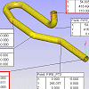 |
07-09-2009 (3D CAD/CAM) Real ESCAN II, çeþitli sektörlerdeki ölçüm ve kopyalama ihtiyaçlarýna cevap verebilen portatif bir 3D lazer tarayýcýdýr:
REALEScan II, yüksek maliyetli üst düzey optik tarayýcýlarýn sahip olduðu performansý uygun fiyata sunmaktadýr. Profesyonel tersine mühendislik yazýlýmlarý, ek ücret gerektirmeden REALEScan II paketine dahil edilmektedir... |
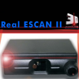 |
12-08-2009 (Tezmaksan) 12-08-2009 (Tezmaksan) MITSUBISHI'den yeni nesil NA-P serisi CNC tel erozyon tezgahlarý:
"NA" serisi tezgahlar, geçmiþten gelen geleneksel "kullanýlmýþ ve onaylanmýþ" tasarým detaylarýyla birlikte, klasmanýnda daha önce hiç geliþtirilmemiþ yeniliklere sahip tahrik sistemleri ve iletiþim yöntemlerini bir arada sunmaktadýr... |
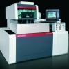 |
21-07-2009 (4C Medikal) MIMICS, 2 boyutlu tomografi ve MRI verilerini 3 boyutlu modele dönüþtüren ve birçok medikal uygulamaya öncülük eden bir yazýlýmdýr:
MIMICS toplam 7 modülden oluþmaktadýr. Bu modüler yapýsý sayesinde MIMICS birçok medikal uygulama için kullanýlabilir. Hekim ve araþtýrmacýlar yapacaklarý uygulama ya da çalýþmaya uygun bir modüler yapý oluþturabilirler. Ayrýca MIMICS, tüm hýzlý prototip sistemlerine data aktarabilir... |
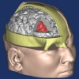 |
29-01-2009 (Ýnformatik) Pro/ENGINEER Manikin Extension çözümleri ile tasarýmlarýnýzla kullanýcýlarýn etkileþimlerini optimize edin, yenilikçi ürünler tasarlayýn:
Günümüzün global pazarýnda, ürün tasarým mühendisleri, ürün tasarým sürecini, üretilebilirlik, monte edilebilirlik, kullanýlabilirlik, ergonomiklik gibi birçok kriteri dikkate alýp deðerlendirerek gerçekleþtirmek zorundadýr... |
|
22-12-2008 (infoTRON) Ege Vitrifiye'de üç boyutlu optik sayýsallaþtýrma uygulamalarý:
Ege Vitrifiye, seramik ürünlerinin tasarým, imalat ve kalite kontrol iþlemlerinde kullanmak üzere, Breuckmann tarafýndan üretilen optoTOP-HE üç boyutlu optik tarama cihazýný ve INUS Tech. tarafýndan üretilen Rapidform tersine modelleme yazýlýmýný kullanmaktadýr... |
 |
11-12-2008 (Bias Müh.) Sonlu eleman yöntemi ile TÜVASAÞ vagonlarýnýn mukavemet hesaplarý:
TÜVASAÞ yetkilileri ile beraber mukavemete etki eden parçalar tespit edilmiþ ve bu parçalarýn orta yüzeylerinden geçen üç boyutlu CAD yüzey modelleri oluþturulmuþtur. Bu modeller kullanýlarak sonlu elemanlar aðý oluþturulmuþ ve kaynak baðlantýlarý yapýlmýþtýr... |
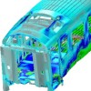 |
01-12-2008
(Hofmann Türk) LaserCUSING ile metal prototip ve soðutma kanallý plastik enjeksiyon kalýplarý imalatý:
Hofmann Türk bünyesinde, Concept Laser GmbH firmasýnýn ürettiði M1 Cusing makinasý bulunmaktadýr. LaserCUSING® teknolojisiyle çalýþan bu makine, metal tozunu kat kat sererek %100 yoðunlukta parça üretimini saðlar. LaserCUSING®, yýllardýr çok karmaþýk soðutma kanallý kalýplarýn üretiminde kullanýlmaktadýr... |
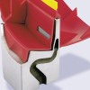 |
18-11-2008 (ORSASistem) Dell'den yeni Precision M6400 Covet ve M4400 iþ istasyonu serisi:
Dell, M6400 Covet ve M4400 serisinde bir çok konuda iyileþtirmeler yapmýþ, bunlarýn baþýnda RAM hacmi, iþlemci performansý, ekran kartý ve görsel tasarýmdaki iyileþtirmeleri sayabiliriz. Ayrýca Dell, NVIDIA ekran kartlarý ile yeni iþ istasyonlarýný taçlandýrmýþ...
|
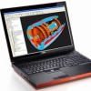 |